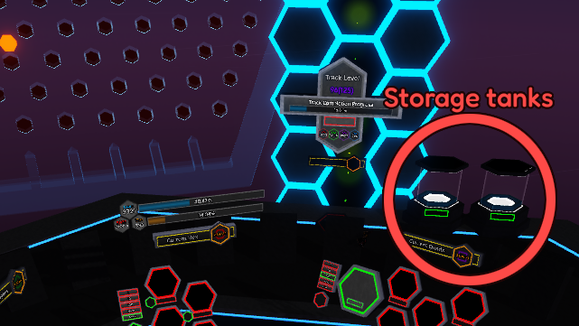

The Plinko unlocks once you get the upgrade on the first Upgrade Tree.
When unlocked, a Pentagon storage tank will appear to the right of the giant Plinko board.
With further upgrades in Upgrade Tree 2, a second tank for Quads will also appear.
Collecting from the Pentagon storage gives you Pentagons based on your best Hex Reset during this Pent Reset.
Similarly, Quad storage gives you Quads based on your best Pent Reset during this Quad Reset.
By default, both tanks store up to 100% of your best resets.
For the Pentagon tank, this can be upgraded through the Upgrade Tree to store up to 500%.
The Pentagon tank can also be auto-claimed when full, if you’ve purchased the appropriate Upgrade Tree 2 upgrade.
Every time a hexagonal chip falls into a Plinko slot, you earn between 1 and 15 points.
The score tends to average out over time, so you don't have to worry about bad RNG.
To fully fill the Pentagon tank, you need 4,000 points. To fill the Quad tank, you need 10,000 points.
You also earn 1 point every 5 minutes while offline,
but that rate is around 225 times slower than when you're in-game.